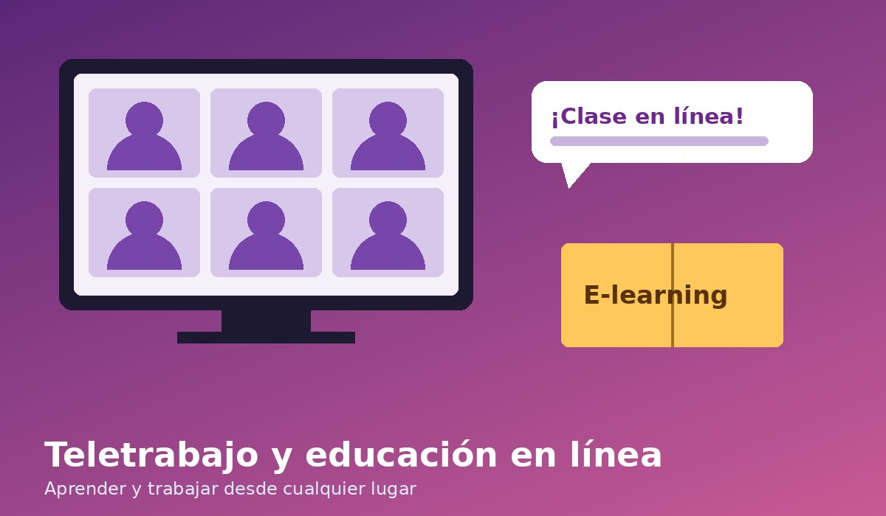

Educación
Los entornos virtuales y los cursos abiertos permiten aprender desde cualquier lugar.
Hoy cualquier persona puede estudiar en línea, comunicarse al instante y consultar información desde su celular.

Los entornos virtuales y los cursos abiertos permiten aprender desde cualquier lugar.
El correo y las redes sociales conectan a personas de todo el mundo.
Muchos trámites del Estado ya se hacen por internet.
| Ámbito | Ventaja | Desafío |
|---|---|---|
| Educación | Acceso a cursos y recursos. | Brecha digital. |
| Comunicación | Contacto inmediato. | Desinformación. |
| Privacidad | Servicios personalizados. | Protección de datos. |